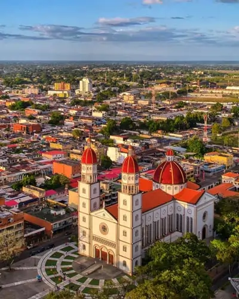
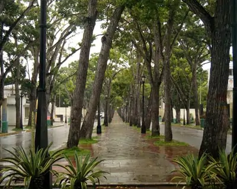
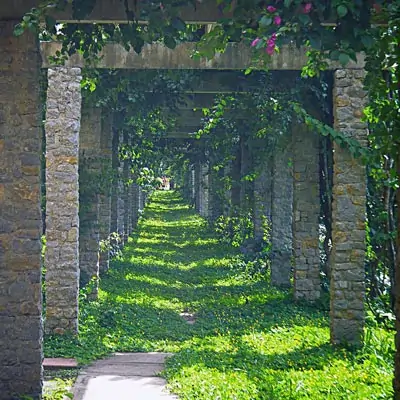
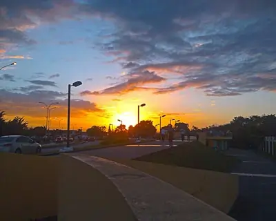
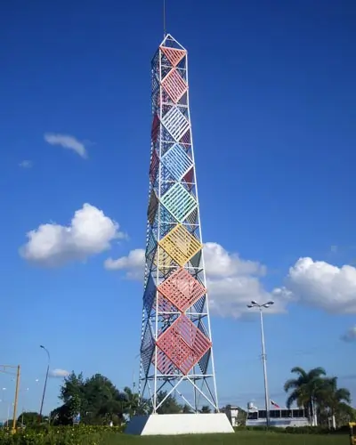

Guarapiche Chamber of Commerce
Home
Discover
Directory
Join
Discover

Cathedral Our Lady of Mount Carmel

Simon Bolivar Avenue

La Cascada Shopping Center
Monumental Stadium of Maturin

Sunset in the Aerobic Walk

Spacial Tower Sculpture